Безусловно, глянцевые издания давно и прочно вошли в жизнь современных представительниц прекрасного пола. И это понятно, ведь приобретя своевременно вышедший модный журнал, можно в считанные минуты ознакомиться с трендами модного олимпа, касательно выбора одежды, обуви, косметики и прочего. Это попросту очень удобно, из одного издания черпать массу новой, актуальной сезону информации! Сегодня мы рассмотрим самые лучшие журналы о моде, которые пользуются невероятным спросом у женщин разных возрастных категорий.
Список популярных модных журналов
1.Cosmopolitan
Сейчас данный журнал известен по всему миру. Ну а его основание пришлось на далекий 1886 год. Изначально он позиционировался в качестве литературного издания, но в 1965 году в первый раз выпустился в вариации «исключительно для девушек». «Местом рождения» этого крупного журнала принято считать США. Cosmopolitan успешно владеет 63 изданиями по всему миру, издается на различных 34 языках, а также имеет успех продаж в 111 странах по всему земному шару! В нем, помимо моды, можно найти статьи посвященные другим не менее актуальным темам, таким как советы по уходу за здоровьем, рекомендациям касательно карьерного роста и т.п.
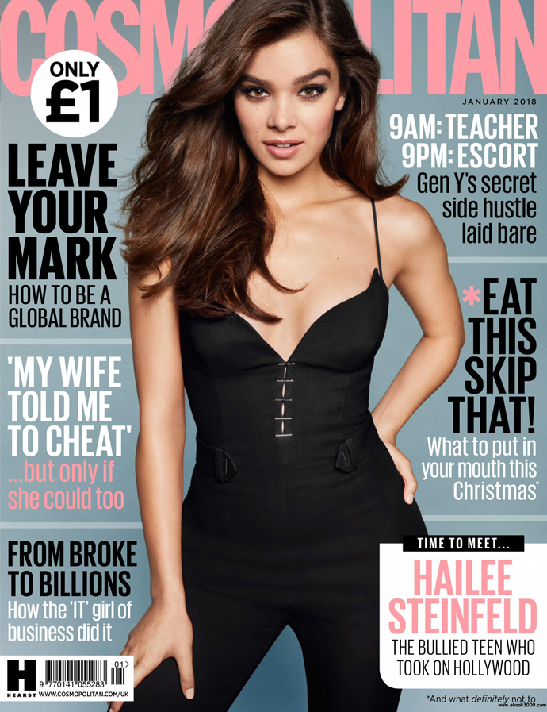2.Elle
Журнал получил свое звучное название согласно переводу. Дело в том, что «Elle» с французского языка означает не что иное, как слово – «она». Основан он был еще в 1945 году, парой супругов — Элен и Пьер Лазарефф. В данном журнале далеко не новинка смешивание брендов с демократичными расценками и люксовыми, ведь они напрямую придерживаются принципа «Mix and match». Известно, что издание на постоянной основе изучают порядка 800000 читательниц в более чем 60 странах мира. На данный момент редактором основной французской версии журнала является Франсуаза-Мари Сантуччи.
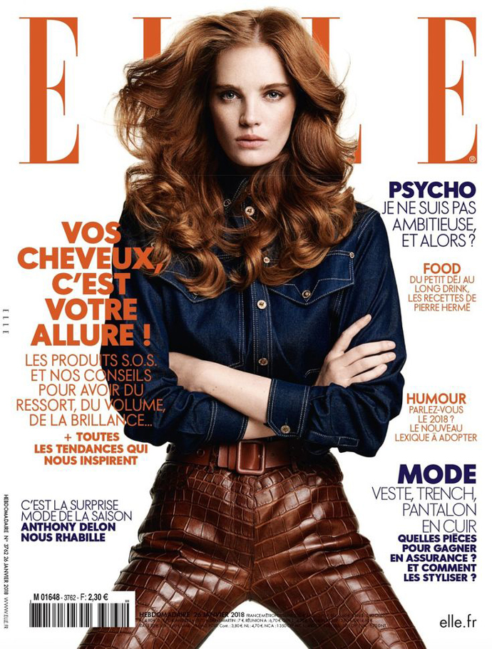3.Vogue
Этот модный журнал начал свое существование с 1892 года. Это один из самых старейших журналов по всему миру, если не самый. Журнал основал Артур Тюрнюр в виде печатного издания. Начиная с 1988 года, и даже по сегодняшний день на посту редактора находится Анна Винтур.
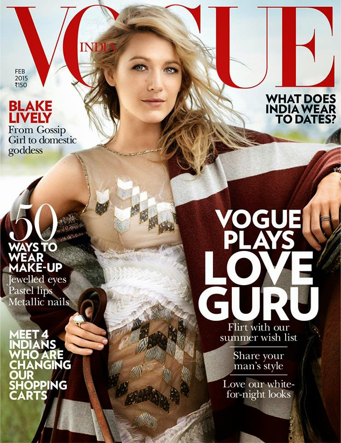4.GQ
Если все прошлые журналы были женскими – то этот по-настоящему мужской, который был основан в 1957 году. В Нью-Йорке базируется редакция журнала. Тематики же у него определенной нет – от моды до секса. Выпускается во всем мире, приблизительно в 24 странах. Считается одним из самых лучших мужских журналов.
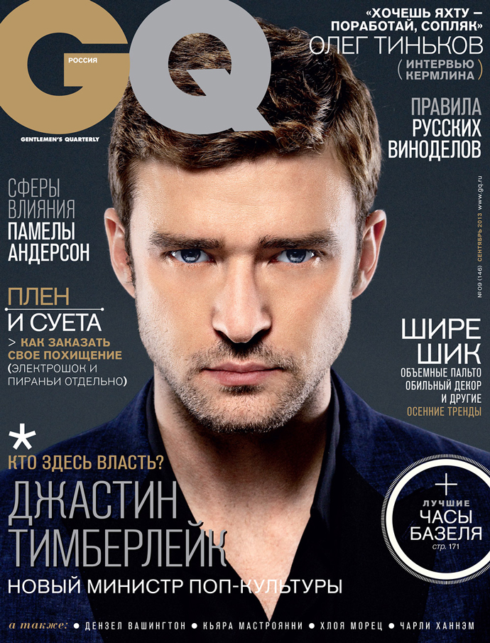5.Marie Claire
Место рождения журнала – Франция, в 1937 году. Но в какой-то момент из-за немецкой оккупации его прекратили выпускать, впрочем, также как и множество других изданий. Правда, тогда издание выжило и вновь начало печататься в 1954 году. Эта дата считается днем рождения данного журнала. В наши дни редактором французской версии Marie Claire является Арно де Контадес.
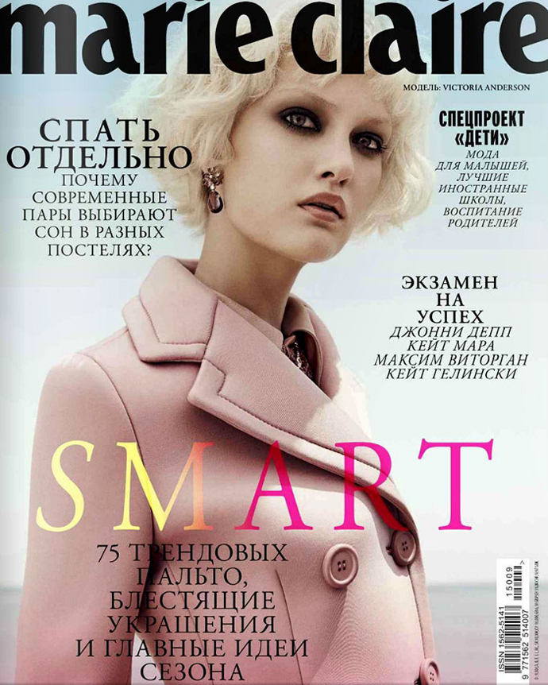6.Numero
Журнал использует тематику не только моды, но и множество других. Он пишет о множестве вещей, начиная от новинок кино и заканчивая, конечно же, модой. Данный журнал особенно поддерживает новичков-модельерш, а также отличается невероятно интересными и захватывающими фотосъемками.
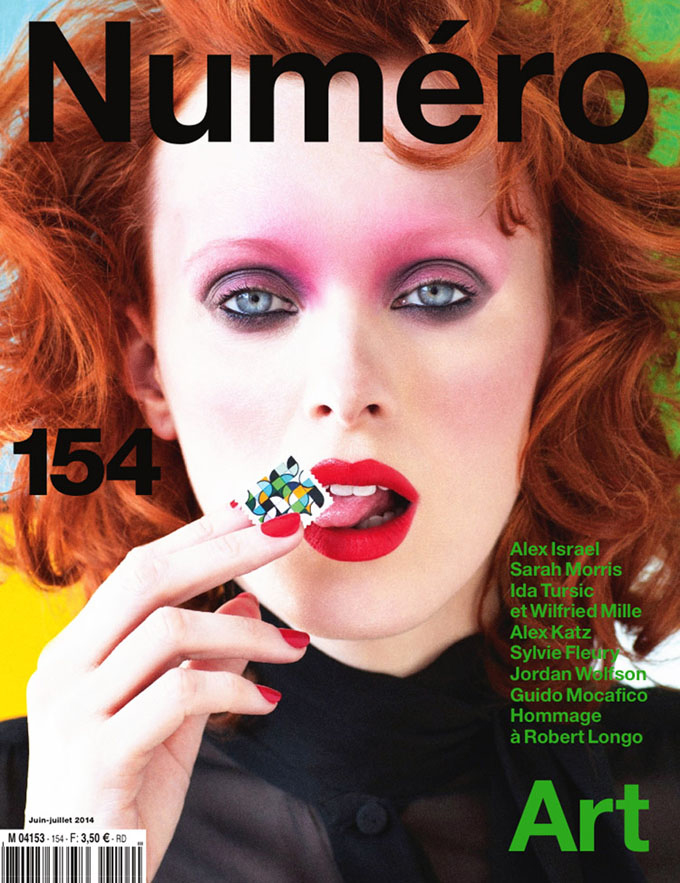7.Vanity Fair
Данный журнал начал выпускаться каждый месяц в далеких в 1895 годах. Пилотную версию журнала напечатали в 1859. На данный момент это один из самых крупных журналов связанных с модой, у которого годовой выпуск не менее 900000 копий. Пост главного редактора занимает Грейдон Картер. Данное издание каждый год организует премию «Оскар».
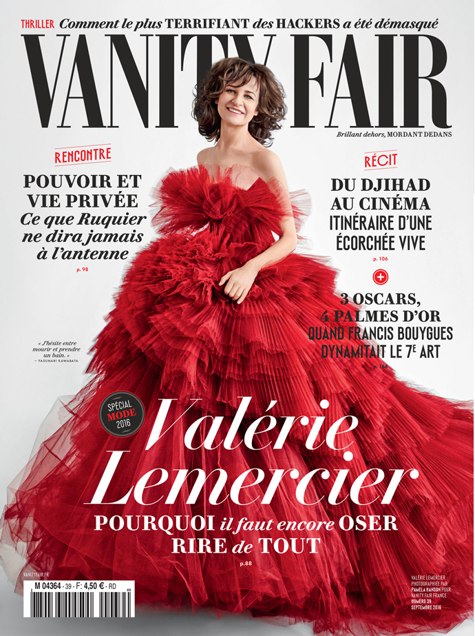8.Harper's Bazaar
Первый раз журнал выпустился в Соединенных Штатах Америки. Каждый год тираж превышает 700000 копий. Статьи выпускаются по темам моды и дизайна. Пост ведущего редактора занимает Гленд Бейли. Harper’s Bazaar успешно продается в 32 странах.
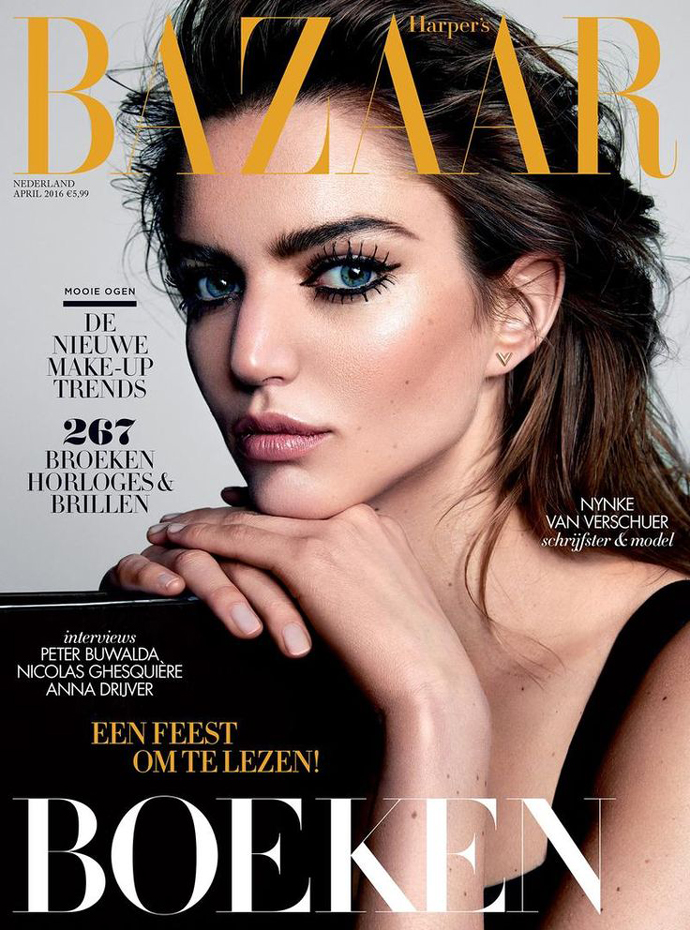9.Teen Vogue
Это – подростковый журнал, выпуск которого впервые начался в 2003 годах. Журнал активно выпускает занимательные статьи о моде и жизни мировых знаменитостей. Пост главного редактора занимает Эми Эстли. Примечательно, что столь молодой журнал имеет большую популярность по всему миру, в год выпускается и продается порядка 1000000 экземпляров.
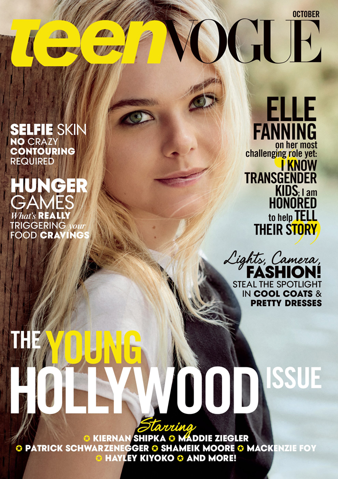10.Purple Fashion Magazine
Журнал был основан во Франции, пишет статьи о культуре. Ведущий редактор журнала – Оливье Зама. Датой рождения журнала считается 1992 год. У издания глубокий взгляд на казалось бы очевидные вещи, а фотографы – различные знаменитости. Выпускается всего два раза в году.
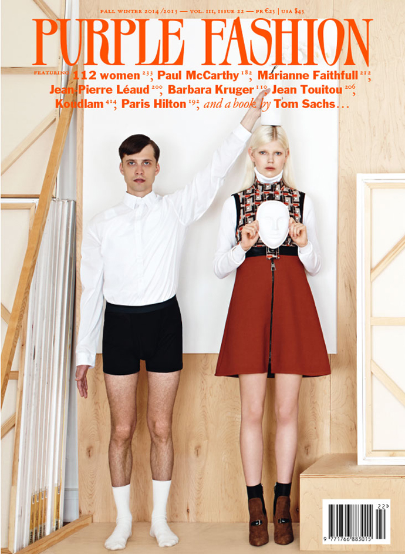11. Glamour
Этот американский глянец издается с 1939 года, и раньше носил название «Glamour of Hollywood». Редактором основной американской версии издания является Синтия Лейв. В год выпускается более 2000000 экземпляров журнала.
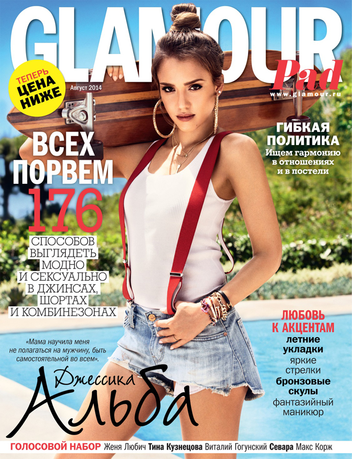12. W
Основан в далеком 1971 году, именно тогда был напечатан первый пилотный выпуск. Журналом владеет Конде Наст, а пост главного редактора занимает Стефано Тончи. Примечательно, что издание ориентировано на женщин с доходом выше среднего и при этом является одним из самых продаваемых журналов.
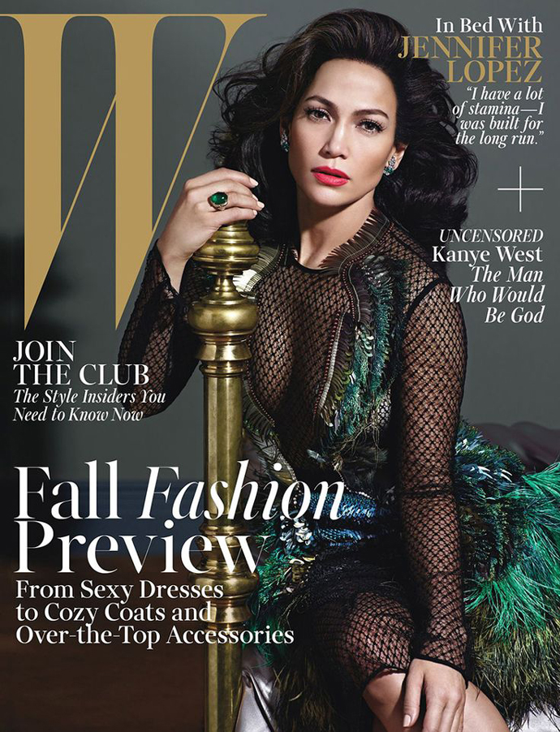13.L'Officiel
Журнал выпускается во Франции, начиная с 1921 года. Не многие знают, но знаменитые модельеры вроде Ив-Сен-Лоран и Кристиан Диор были представлены миру именно этим изданием.
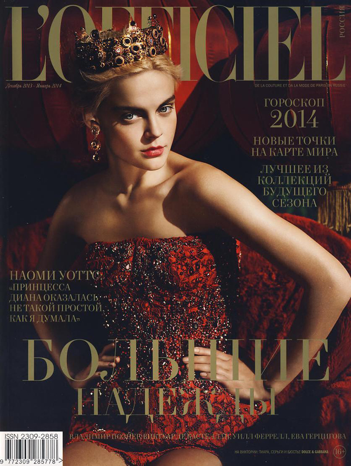14. Dazed
Этот британский журнал выпускается с 1992 года, причем выходит не каждый месяц, а всего 6 раз в год. Повествует о городской жизни, модных новинках и стиле в целом.
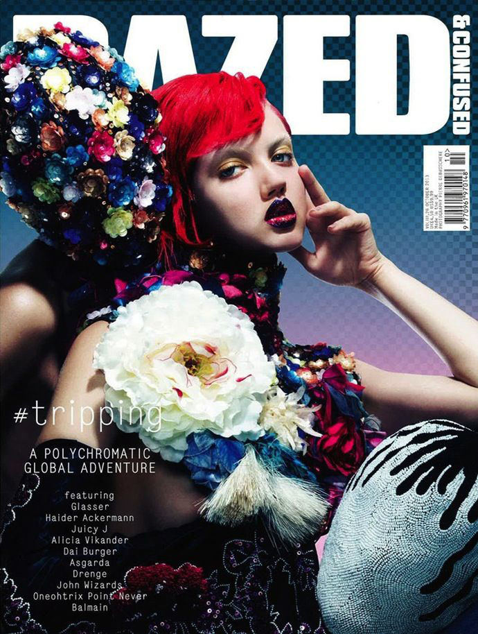15. InStyle
Первое издание датируется 1994 годом. Журнал освящает жизнь знаменитостей, повествует о моде, дизайне интерьеров, путешествиях и т.д. Примечательно, что это издание не помещает на обложки модельные незнакомые лица, а только знаменитых людей.
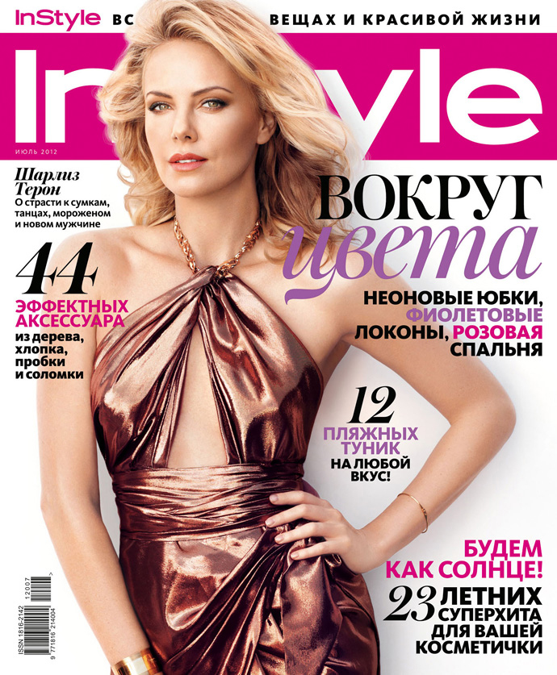
Примечательно, что модная индустрия не стоит на месте, а развивается семимильными шагами.
Если сравнивать журналы о моде прежних годов с актуальными нашему времени новинками, то естественно разница
на лицо!
Изменилась не только подача информации, но также качество страниц, фото и мысли журналистов.
И как
же
хорошо, что благодаря таким изданиям все мы в любой момент можем окунуться